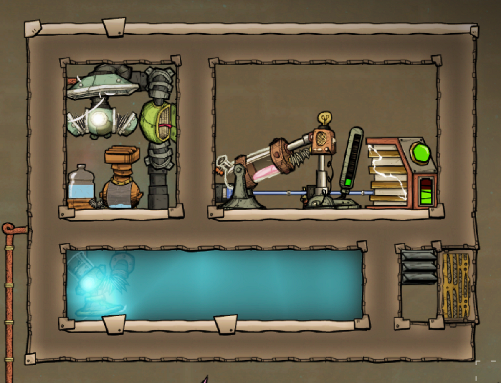
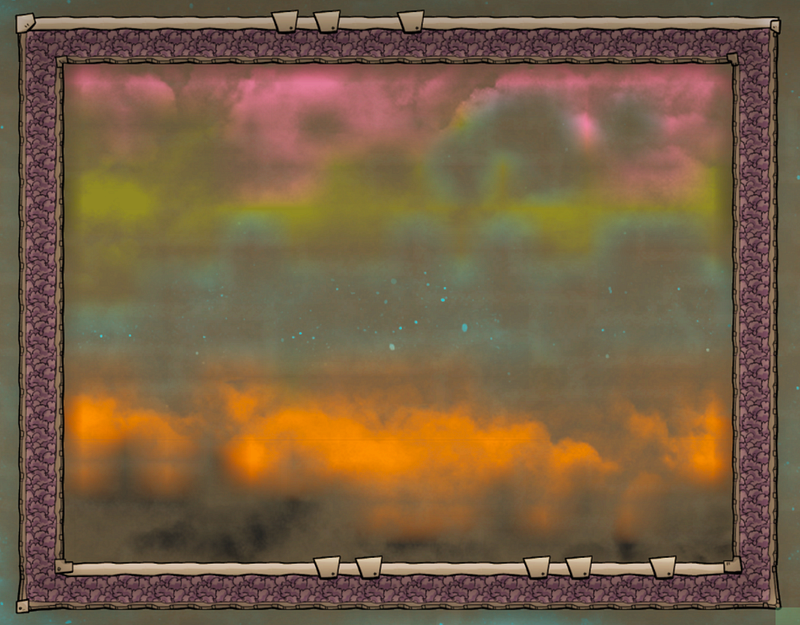
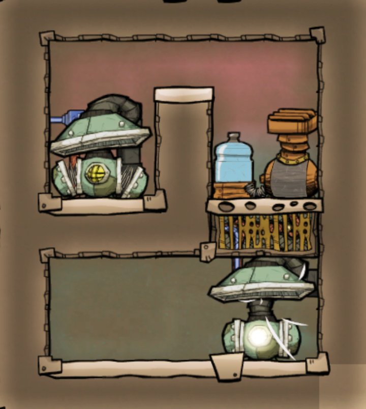
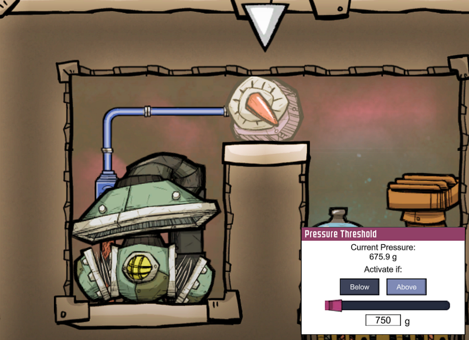
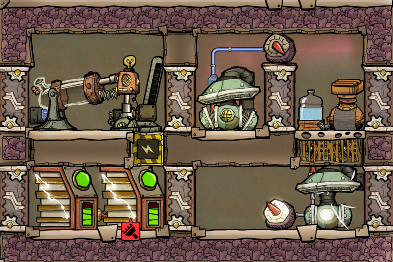
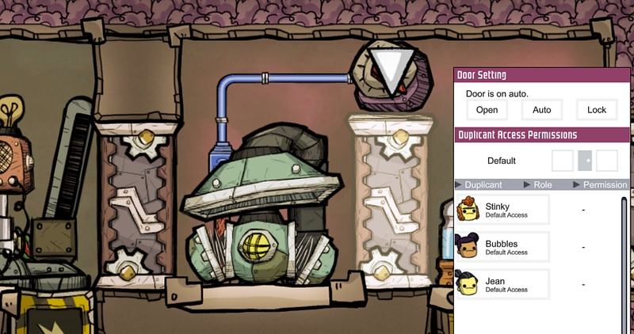

Oxygen Not Included 初心者向け、電解機と水素発電の酸素供給施設の考察（２）
Oxygen Not Included 初心者向け、電解機と水素発電の酸素供給施設の考察（２）
前回の記事では簡単な酸素供給施設の設計について考察した。今回はそれをふまえた上で、さらにもう一つ工夫を施した酸素供給施設を考えながら、ゲーム内で他にも使える考え方を紹介していく。
追記：2018年12月のアップグレード（「QoLアップグレード」）から、電解機から得られる酸素の温度がそれまでの40℃ではなく、60℃になったため、ここで紹介しているシステムは正直ちょっとそのまま作るのは難しくなりました。現在色々研究中です

Oxygen Not Includedはこの電解機と水素発電による酸素供給施設が効率良く稼働するように工夫するところから、ようやく本当のゲームが始まると言っても過言ではないと思っている。medium.com
電解機の限界性能を引き出す
前回の記事で解説したシステムは問題なく動く。が、あの記事では敢えて解説しなかった大きな非効率が存在する。それを理解するにはまず電解機の仕様を理解する必要がある。
電解機は1秒につき1kgの水を約900g弱の酸素と100g強の水素に分解してくれる。分解した結果の副産物はそのまま空気中に排気する。ただし、排気するためには電解機のまわりの気圧がなんらかの規定値以下の場合のみ。つまり、作成された水素と酸素を排気せずに電解機を回し続けると、どこかのタイミングで動作を止めてしまう。
逆に、排気を担ってくれる吸気ポンプは1秒につき500gのガスを吸い出してくれる。
つまり、電解機は1秒に合計1000gのガスを作り出し、吸気ポンプはその半分の500gを排気する。
前回紹介したようなシンプルなシステムの場合、1台の吸気ポンプで排気では必ず短期間で最大気圧に到達して電解機が動かなくなる、ということだ。
もちろん、充分な酸素が基地内に回っている間はこれが多少止まろうがたいした問題はないが、後ほどでてくるエクソスーツ（宇宙服）等への酸素供給をしたり、より広範囲に酸素を供給したい場合に生産量がおいつかないことになる。
何個も酸素供給施設を作るのは配管等の面から面倒なので、なるたけひとつの施設が生成できる酸素量を最大化するために、電解機の限界性能を引き出すべきだ。
新しいデザイン
ここまで整理した情報からひとつの電解機に対して吸気ポンプは2個必要なのがわかる。もう少し厳密に考えると、電解機5台に対して吸気ポンプが水素用に1台と酸素用に9台なのだが、そこまでのおおがかりなセットアップする必要はあまりないのでここでは電解機1台に対して吸気ポンプが1個以上、という形で考える。
もっとも単純な方法は前回のデザインに吸気ポンプとフィルターをもう1台ずつ追加することだ。
このシステムだと電気使用量は 吸気ポンプ 240W x 2、120W x 2、電解機120Wの合計 840Wとなる。水素発電機は800W発電でき… あれ？そう、これだと水素発電機1台では賄えなくなるのだ。
では水素発電機を二つ作れば1600Wで充分じゃないか！と思うかもしれないが、水素発電機は1秒に100gの水素を消費する。前述した通り電解機1台が排出する水素は100g強なので2台分の200gには全く足りてない。
省エネか？補助電力を使うか？
こうなってくると電解機の限界性能に近づけるには部品を減らして省エネ構成にするか、足りない分の電気を他のソースから補うか、… とにかく違う方法を考えないといけない。
やり方は無限に存在するのがOxygen Not Includedというゲームの良いところだが、ここではクローズドシステムを構築したい、という目的を優先して、なんとかこの酸素供給施設内だけで電力をまかなう方法を考えてみる。
では何が可能か考えてみよう。電力を消費するのは電解機、吸気ポンプ、そしてフィルターだ。電解機は一つしかないし、吸気ポンプはそもそもその電解機の性能を引き出すために二つ必要だという事がわかっているのでこれ以上減らせない。それではフィルターはどうだろう？
実はいくつかのトレードオフを受け入れる事によって、フィルター機能はフィルターを使わずに再現できる。
フィルターを使わないで気体を分離する
このゲームの大きな特徴として気体類がある。酸素、二酸化炭素、水素等をうまく扱わなければいけないのだが、このゲームではそれぞれ気体の比重によってじょじょに上下に移動し始めるのだ。
ひとつの部屋に水素（ピンク）、汚染酸素（黄色）、酸素（青）、天然ガス（オレンジ）、二酸化炭素(黒）をつっこんでおいて少し待つと以下のように分離し始める。見ての通り酸素と汚染酸素はあまりキレイに分離しないが、それ以外はかなりはっきりと分離している。

あともうひとつこのゲームの中での気体（実は液体でも同じなのだが…）の性質として、ひとつのマス目を占有できる気体の種類はひとつだけ、ということである。現実の世界のように本当に混じり合った気体というものは存在しない。
この辺りの性質を使って、気体をわけていく。
上記の画像を見てわかるように、水素は酸素より上に昇る。つまり、水素の通り道を上部に作り、そこに水素と酸素を突っ込んでいくと、自然と水素だけがその道を通っていくことになる。
この考え方を実装すると以下のようになる。

一マスだけあいた水素の通り道を含む部屋の上部が一度水素で満たされてしまえば、それ以降酸素がその道を通ることはない。なので酸素は下へと移動するしかない。
こうすることによって、上の吸気ポンプは水素、下の吸気ポンプは酸素、とフィルタリングがだいたい実現できた。ただ、水素の供給は~100g/secに対して水素用の吸気ポンプは500g/secである。吸気ポンプが常に全力で稼働していはそもそも水素が溜まらない。そこで自動化する。
次の画像では、通路タイルの気圧が750gを超えた時のみ、吸気を開始するようにしている。

下の酸素用ポンプもなんらかの理由によって酸素が供給されなかった時用の安全措置として気圧計を設置しておくとよい。
トレードオフ
残念ながらここまでしてもこの方法も完璧ではない。例えば最初に部屋を作った時に水素用ポンプの部屋に入っていた気体はどうしても吸気されてしまう。
その後余計なガスが排出され、純粋な水素のみの状態になったあとも、電解機が止まったり、なんらかの理由で他の気体が混入してしまった場合もその気体が吸気されるのを阻止することはできない。
つまり、このシステムは「9割方、純粋水素を取り出すことができるが、たまに他の気体が混入することもある」というシステムなのだ。そのかわりフィルター分の電力を節約できる。
完成形
ここまでの情報をまとめると以下のようなデザインになる。

右側が酸素生成システム、左側が発電システムである。このシステムは熱を発生させるので全体を断熱材で覆っている。
マニュアルエアロックだらけなのは自分の趣味だ。時々メンテナンスが必要な時にイチイチ壁を崩したくないので、一番重要な右上三つのエアロックは誰も通れない状態にしておく。これで実質タイルで壁を作ったのと同じ状態にできる。

また、水素は最大100g/sec消費されていくが、スマートバッテリーの設定によっては長時間発電がされないことが予想されるため、水素をどこかにバッファしておく必要がある。
自分は反エントロピー型熱無効化装置ないしウィーズウォートによる冷却に水素を使うのが大好きなので、可能な限り貯蓄していく派だが、そのあたりは好みによって別れるだろう。
上記の例では、気体ブリッジを使って水素発電機側に優先的に水素を送りつつ、画面外の施設に水素を送り込んでいる。
また、今回は初回起動時の電源については割愛した。
さらなる改良へ
今回の酸素供給施設は個人的にはゲーム序盤〜中盤では欠かせない。比較的コンパクトだし、少なくとも電力に関しては完全にクローズドなシステムになっているので、基地から遠い場所にも比較的容易に設置できる。
だがゲーム後半に近づくにつれ、より広範囲により多くの酸素を供給する必要が出てくる。その際には今回の施設を複数作っても良いのだが、この施設では前述した吸気ポンプと電解機の理想の比率にあまり近くない。何も100%稼働を狙う必要はないのだが、やはり効率をあげるためにはもう少し施設をスケールアップさせる必要がある。それについてはまた次回。